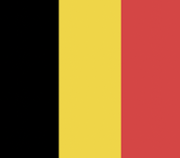
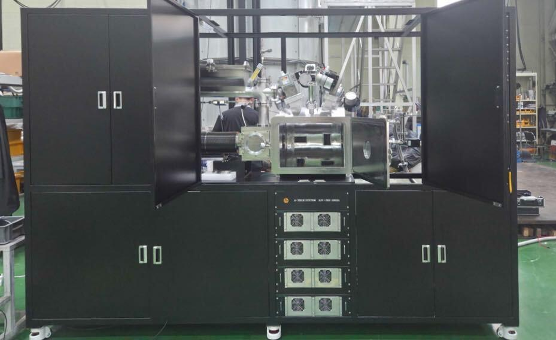
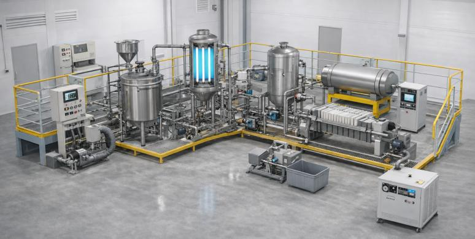
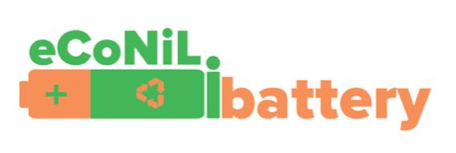
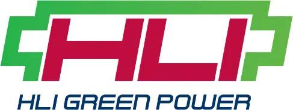

Small action, BIG DIFFERENCE

지속가능한 배터리 재활용을 위한
화학소재 및 친환경 차세대 공정기술

COMPANY
기업소개
기업명
주식회사 코솔러스
대표자
김성현
임직원
27명
소재지
대한민국 전주, 익산, 완주, 군산
비전
사용 후 배터리 핵심광물 회수를 위한 혁신 화학소재와 친환경 공정 기술을 통해, 인류의 지속가능한 미래를 선도하는 글로벌 리더로 도약

2
BACKGROUND
배터리 순환경제가 필요한 이유
환경·지정학적 요인 — 배터리 밸류체인 전반의 환경부하 및 사회적 비용
19/20
전략광물 20개 중 19개 정제 1위(중국)
70%
전략광물 정제 평균 점유율(중국)
89%
글로벌 블랙매스 처리 비중(중국)
133t
니켈 1톤당 폐기물 발생량(광산채굴 기준)
채굴 산업의 노동 및 인권문제, 광산채굴 기준 수요-공급 미스매치 발생

Source: IEA, Global Critical Minerals Outlook 2025; Benchmark Mineral Intelligence, China's Battery Recycling Dominance, 2025; Earthworks, Filtered Tailing in Indonesia, 2026
산업적 요인 — 북미 ESS 시장 성장 전망
CAGR 31.6%
북미 ESS(에너지저장시스템) 시장의 에너지 용량(GWh) 기준 연평균 성장률[확인필요: 연도별 시계열 수치는 원본에 없음]
Source: SNE Research (2023); Mirae Asset Securities Research Center (Jan. 2026); Korea Automotive Technology Institute (KATECH), Mobility Insight (Apr. 2024; citing SNE Research)
3
BACKGROUND
비즈니스 모델
자원 확보
폐자원으로부터 핵심 광물을 확보해
새로운 원재료 공급원을 만든다
새로운 원재료 공급원을 만든다
환경 저감
유해물질 억제 및 온실가스 감축으로
환경 오염을 줄인다
환경 오염을 줄인다
신공급망 구축
제조 → 재활용 → 제조로 이어지는
재활용 기반 新공급망을 구축한다
재활용 기반 新공급망을 구축한다
4
BACKGROUND
기존 재활용 공정의 한계
재활용 공정 현황 (1세대)
⚫
블랙매스 투입
➔
⚗
1세대 습식 추출 공정
낮은 선택성 · 제한된 동작 환경(pH 등)
➔
⚖
상분리
상분리 불안정
➔
♺
금속 회수
부산물 과다발생(망초 등)
LIMITATION
낮은 선택성
제한된 동작 환경(pH 등)
상분리 불안정
부산물 과다발생(망초 등)
→ 소재 및 공정 개선 필요
5
BACKGROUND
솔루션1 — 고성능 추출제(1.5세대 화학소재)
기존 추출제 (1세대)

D2EHPA — 광산·염호 기반 금속 회수용 추출제
➞
COSOLUS 추출제 (1.5세대)
RECYION Series
6
TECHNOLOGY
핵심기술 — 고성능 추출제 성능·원가 경쟁력
| 구분 | COSOLUS | 벨기에 S사 | 중국 K사 |
|---|---|---|---|
| 공정시간 | 기준 | COSOLUS 대비 100% 증가 | COSOLUS 대비 50% 증가 |
| 첨가제 사용량* | 기준 | COSOLUS 대비 10% 이상 추가 필요 | COSOLUS 대비 5% 이상 추가 필요 |
*블랙매스 1톤당 첨가제 사용량 기준
이론단수 5단 → 4단(20% 감소) — 추출 효율 2~5% 개선, 추출 단수 1단 저감(CAPEX 경제성 확보)
대한민국 배터리 재활용 업체 연간 니켈 16,000톤 생산 기준, COSOLUS 추출제로 망초 4,800톤/년 저감 가능(OPEX 경제성 확보)
대한민국 배터리 재활용 업체 연간 니켈 16,000톤 생산 기준, COSOLUS 추출제로 망초 4,800톤/년 저감 가능(OPEX 경제성 확보)
7
TECHNOLOGY
솔루션1-2 — 직접 리튬 추출(DLE)
기존 DLE (증발법)
1단계 · 증발 농축 기반 Li 회수 (3.12%)

Chile, Atacama Salt Flat
➞
COSOLUS 추출 후 재활용
NCM 스크랩 → 침출 → 불순물 제거
① Mn 추출
② Co 추출
③ Ni 추출
④ 역추출 4단계
Source: 한국광해광업공단(2024), 오세희 의원실 2025 국정감사 분석; John Moore/Getty Images, Chile Mines Lithium From Salt Flats of Atacama Desert (2022); Controlled Thermal Resources, via Chemical & Engineering News (2024)
8
TECHNOLOGY
DLE 기술 동향 비교
| 구분 | 흡착제 | 추출제 | 분리막 | 전기화학 |
|---|---|---|---|---|
| 작동원리 | Li⁺(액상)과 흡착제(고상)간 선택적 상호작용 | Li⁺(액상)과 추출제(액상)간 선택적 상호작용 | Li⁺(액상)의 분리막(고상)을 통한 선택적 이동 | Li⁺(액상)과 전극(고상)간 선택적 상호작용 |
| 기술성숙도(TRL) | TRL 9 (상용화 단계) | TRL 4-5 (실험실 검증 단계) | TRL 4-5 (실험실 검증 단계) | TRL 3-4 (실험실 검증 단계) |
| 장점 | 선택성 우수 · 공정 단순 | 높은 회수 효율 · 재사용 가능 · 기존 공정 적용 가능 | 우수한 효율 · 공정 단순 · 낮은 화학약품 사용량 | 우수한 효율 · 낮은 화학약품 사용량 |
| 단점 | 재사용성 제한 · 높은 운영비용 | 높은 운영비용 | 높은 운영비용 | 복잡한 시스템 · 대규모 양산 적용에 한계 |
Source: Desalination, 2024, 575, 117249
9
TECHNOLOGY
COSOLUS DLE의 핵심 강점과 성과
KEY ADVANTAGES OF EXTRACTANT–SEPARATOR
① 추출제와 리튬이온(Li⁺) 간 액-액 접촉을 통한 빠른 물질 전달
② 화학적 결합(추출제) + 공간적 분리(분리막)를 통한 우수한 재활용 효율
③ 액상 공정을 통한 용이한 연속 운전
④ 분리막 기반 농축을 통한 첨가제 소모량 감소
분리막 & THz 기술
핵심소재 기술
3%
➞
90%
3%
➞
50%
COSOLUS 화학구조 설계·정제·공정 기술 → 재자원화율(>90%*), 공정비용(<5,500원/kg) | *리튬선물 가격 약 44,100천원/ton 수준 기준 | Source: KOMIS; Green Chem., 2026, 28, 1144
10
TECHNOLOGY
솔루션2 — 친환경 차세대 재활용 공정기술(2세대)
기존공정 (1세대)
유도가열
부유선별
건식환원
양극재/음극재용 블랙매스 → 재활용 양극재 · 고순도 정제흑연 · 코발트 · 니켈
➞
COSOLUS (2세대)
COSOLUS 유도가열
COSOLUS 부유선별
건식환원 (폐흑연 포함)
경제성 · 친환경성 · 양산성 확보
11
TECHNOLOGY
핵심기술 — 유도가열·부유선별 공정과 코발트 회수
친환경 차세대 배터리 재활용 공정기술(2세대)

COSOLUS 유도가열
➔
⚫
전처리 · 블랙매스
양극재용 / 음극재용
➔

COSOLUS 부유선별
➔
♺
고순도 정제흑연 / 코발트·니켈
RESULT — 건식환원에 의한 코발트(또는 니켈) 회수
>95%
Co 회수 순도
PCT 2건
특허 출원
12
TECHNOLOGY
경쟁력 — 가격·기술 우위
| 구분 | 기존 소성로 (Pusher Kiln) | COSOLUS |
|---|---|---|
| 공정시간 | 10시간 이상 장시간 소요 | 1분 이내 (200배 빠른 승온 속도) |
| 에너지 투입 | - | 432 Wh/kg (64% 에너지 절감) |
| 재생흑연 순도 | - | 99% 이상 (고순도) |
| 온도 정밀도 | 낮은 온도 정밀도 | 균일한 온도 분포 구현 |
| 시설 투자비용 | 높은 시설 투자비용 | - |
낮은 부반응 발생 · PCT 2건 출원
13
EXECUTIVE SUMMARY
투자포인트
기술력
추출제 최상위 수준의 합성 및 정제 기술
친환경 공정 기술(건식환원 및 유도가열 기술)
Closed-loop system 합성/공정 기술로 환경부담 최소화
사업화 방향
(1.5세대 – RECYION Series) XX하이텍, XX코 등 현장적용을 고려한 PoC 진행 중
(2세대 – 친환경 공정기술) XX자동차 연계 신공급망 구축, 일본 및 인도네시아 시장 진출(파일롯 기술검증 후 JV 설립)
투자라운드
Series A2
목표 투자유치 금액
80억원
투자금 사용 계획
글로벌 진출을 위한 국외법인 설립 및 운영
공장 건설을 위한 토지 구매 및 건축 비용 — 추출제 CAPA, 공정파일롯
14
MILESTONE
세계시장 진출
일본과 인도네시아를 전략적 거점으로 5억 명 이상의 아시아 경제권에서 성장
인도네시아
전기자전거 업체 1대주주와 투자논의 중



일본
현지투자사, 재료업체 등과 투자논의 중
15